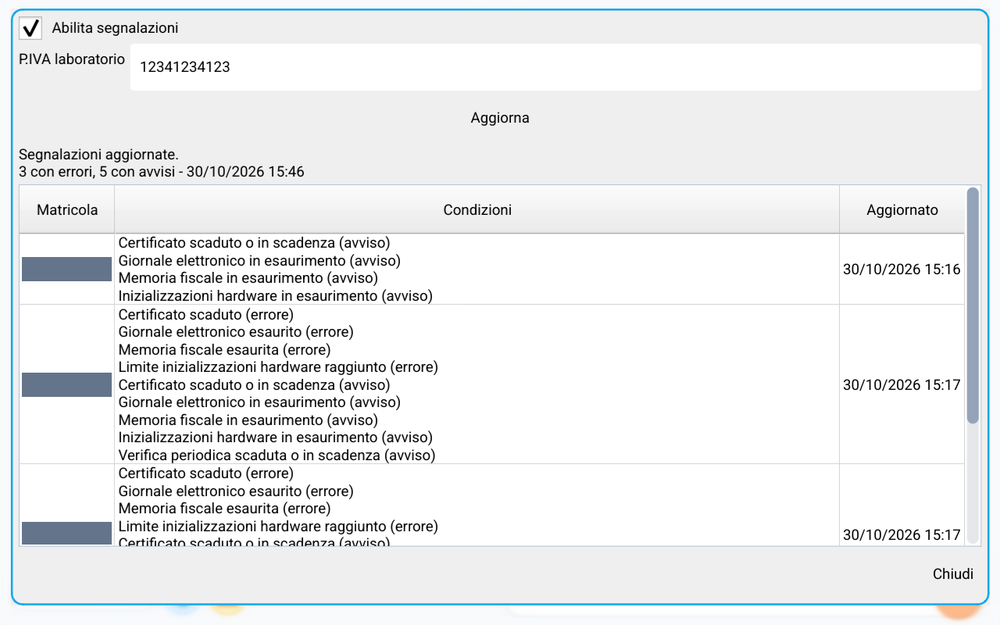
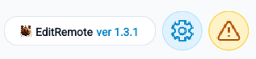
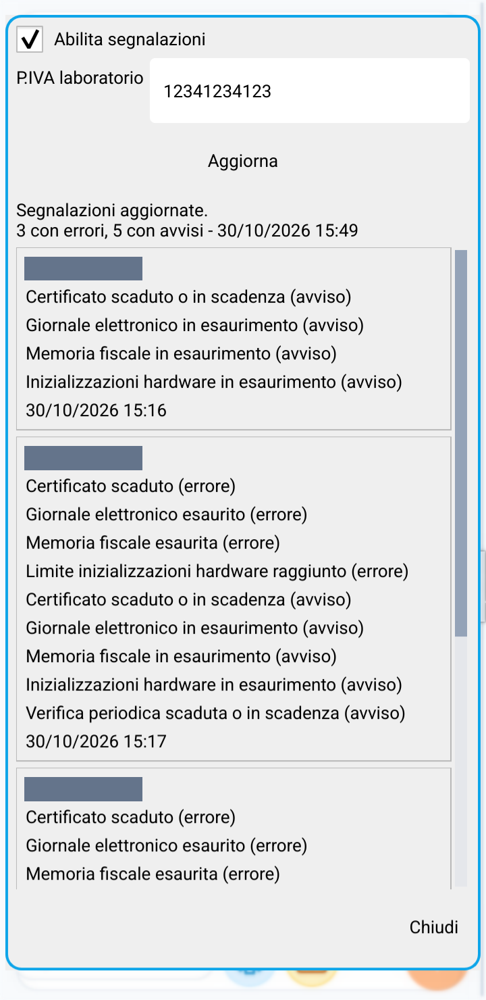

Segnalazioni cloud
Avvisi ed errori delle casse
Segnalazioni cloud raccoglie in un unico elenco le condizioni che richiedono attenzione sulle casse associate alla P.IVA del laboratorio. Puoi consultarle anche senza collegarti a una cassa.
Servono una connessione internet sul telefono o tablet e un software della cassa che supporti l'invio delle segnalazioni. La cassa deve poter comunicare con internet: il solo aggiornamento di EditRemote non attiva l'invio sui registratori con software precedente.
Attivare e aggiornare le segnalazioni
- Apri EditRemote e tocca Segnalazioni cloud nell'elenco della schermata principale. Se non la vedi subito, scorri l'elenco.
- Seleziona Abilita segnalazioni.
- Inserisci la P.IVA laboratorio di 11 cifre, corrispondente al laboratorio registrato sulla cassa. Non usare la P.IVA dell'esercente.
- Tocca Aggiorna e attendi il messaggio Segnalazioni aggiornate.
La cassa usa la P.IVA del laboratorio dell'ultimo intervento tecnico registrato; se non disponibile, quella dell'attivazione. Se manca una cassa dall'elenco, controlla anche questi dati sul registratore.
Abilitazione e P.IVA vengono conservate. Quando la funzione è abilitata e configurata, EditRemote aggiorna la lista anche all'avvio. Per consultare di nuovo i dati durante l'uso premi Aggiorna: non è un monitoraggio continuo in tempo reale.

L'icona Alert accanto all'ingranaggio
Se l'ultima lista disponibile contiene almeno una segnalazione, nella schermata principale compare un triangolo Alert accanto all'ingranaggio di Abbonamento App. Toccalo per aprire direttamente Segnalazioni cloud.

Se la lista è vuota o disabiliti le segnalazioni, l'icona scompare. La voce nel menu resta disponibile per riaprire la schermata. In caso di errore di rete, l'icona può riferirsi all'ultima lista letta: controlla sempre il messaggio e la data mostrati nella finestra.
Come leggere l'elenco
- Riepilogo: conta le casse con almeno un errore e quelle con almeno un avviso. Una stessa cassa può contribuire a entrambi i conteggi.
- Matricola: identifica il registratore che ha inviato le segnalazioni.
- Condizioni: descrive ogni problema e indica se si tratta di un errore o di un avviso.
- Aggiornato: data e ora dell'ultimo invio ricevuto per quella cassa, non dell'ultimo controllo eseguito dall'app.
La data accanto al riepilogo indica invece l'ultimo aggiornamento riuscito della lista in EditRemote. Un certificato scaduto, per esempio, può comparire sia come errore sia come avviso di scadenza.
Le condizioni riguardano memoria fiscale, giornale elettronico, inizializzazioni hardware, certificato e scadenza della verifica periodica. La schermata serve alla consultazione: non risolve il problema e non invia comandi alla cassa.
Uso sul telefono in verticale
In verticale o su uno schermo stretto, l'elenco diventa una serie di schede. Ogni scheda contiene matricola, condizioni e data. Scorri dall'alto verso il basso per vedere tutte le casse: non serve trascinare una tabella lateralmente.

Lista vuota, dati vecchi o errori di collegamento
- Lista vuota: verifica abilitazione e P.IVA laboratorio. Una cassa senza condizioni attive non compare; nemmeno una cassa che non ha ancora inviato dati con il software compatibile.
- Problema risolto ma ancora presente: la cassa deve prima inviare la nuova situazione, poi devi aggiornare la lista nell'app. Il rientro non è immediato.
- Errore di rete o del servizio: resta visibile l'ultima lista letta correttamente, con la sua data. Controlla internet e riprova con Aggiorna.
- Cassa scomparsa: le segnalazioni non rinnovate da 7 giorni vengono rimosse. La scomparsa può quindi dipendere dalla mancata comunicazione, non dalla risoluzione del problema.
Le casse riconfermano periodicamente le condizioni ancora attive. La lista non conserva uno storico e non certifica che tutte le casse del laboratorio siano online.